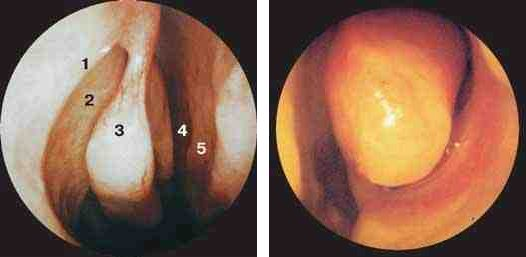

Сверка с PDF рубрикатора выполняется…
Острый синусит
Клинические рекомендации от 28.10.2024 · взрослые и дети
Основные положения
- Диагноз острого синусита у взрослых:
Обязательные критерии
- острое начало заболевания;
- два симптома и более, из которых обязательно присутствуют заложенность носа и (или) выделения из носа, в том числе стекание слизи по задней стенке глотки (постназальный синдром);
- сохранение симптомов не более 12 недель.
- боль или ощущение давления в проекции околоносовых пазух на лице;
- снижение или потеря обоняния.
- Диагноз острого синусита у детей:
Обязательные критерии
- острое начало заболевания;
- не менее двух симптомов из перечисленных ниже;
- сохранение симптомов не более 12 недель.
- заложенность носа;
- выделения из носа, в том числе стекание по задней стенке глотки (постназальный синдром);
- кашель.
- Системная антибактериальная терапия взрослым показана:
- при среднетяжёлом и тяжёлом течении;
- при лёгком течении рецидивирующего синусита с сохранением симптомов 5–7 дней и более;
- при лёгком течении на фоне тяжёлой сопутствующей патологии или иммунодефицита.
- При впервые возникшем синусите стартовым препаратом является незащищённый аминопенициллин (амоксициллин). Если заметного эффекта нет в течение 3 дней, препарат заменяют.
- Местная терапия:
- промывание полости носа солевыми растворами;
- сосудосуживающие капли не более 5–7 дней;
- интраназальные глюкокортикостероиды пациентам старше 12 лет.
- Показания к экстренной госпитализации:
- тяжёлое течение;
- орбитальные или внутричерепные осложнения;
- отсутствие улучшения на фоне системной антибактериальной терапии в течение 3–5 дней;
- ухудшение состояния в любой момент.
Клиническая картина и классификация
Определение
Острый синусит представляет собой острое воспаление слизистой оболочки полости носа и околоносовых пазух продолжительностью менее 12 недель, проявляющееся не менее чем двумя симптомами (перечислены в критериях диагноза ниже). Часть симптомов может быть заменена данными риноскопии, эндоскопии или компьютерной томографии (КТ).
Синусит считается рецидивирующим при 4 эпизодах и более за последний год, если между эпизодами имеются периоды не менее 8 недель без симптомов и без лечения.
Острый поствирусный синусит диагностируется при сохранении симптомов более 10 дней после острой респираторной вирусной инфекции (ОРВИ) и отсутствии признаков бактериального синусита. Как правило, он протекает легче и разрешается без антибактериальной терапии.
Критерии диагноза
У взрослых:
Обязательные критерии- острое начало заболевания;
- два симптома и более, из которых обязательно присутствуют заложенность носа и (или) выделения из носа, в том числе стекание слизи по задней стенке глотки (постназальный синдром);
- сохранение симптомов не более 12 недель.
- боль или ощущение давления в проекции околоносовых пазух на лице;
- снижение или потеря обоняния.
У детей:
Обязательные критерии- острое начало заболевания;
- не менее двух симптомов из перечисленных ниже;
- сохранение симптомов не более 12 недель.
- заложенность носа;
- выделения из носа, в том числе стекание по задней стенке глотки (постназальный синдром);
- кашель.
Болевой синдром может отсутствовать. При верхнечелюстном синусите боль локализуется в проекции пазухи, реже в области переносицы и надбровья, и может иррадиировать в верхние зубы. Для сфеноидита характерна боль в центре головы и в затылочной области (каскообразная боль).
У детей синусит часто сочетается с гипертрофией и хроническим воспалением глоточной миндалины и может проявляться упорным кашлем или выраженным затруднением носового дыхания.
Степень тяжести таблица 1 в тексте КР
| Форма | Признаки |
|---|---|
| Лёгкая | Лихорадка отсутствует. Умеренные симптомы, не влияющие или незначительно влияющие на качество жизни. Головная боль в проекции околоносовых пазух (ОНП) отсутствует. Осложнений нет |
| Среднетяжёлая | Выраженные симптомы, умеренно или значительно влияющие на качество жизни. Ощущение тяжести в проекции ОНП при движении или наклоне головы. Осложнение со стороны среднего уха (острый средний отит). Внутричерепные и орбитальные осложнения отсутствуют |
| Тяжёлая | Выраженные или мучительные симптомы. Болезненность в проекции ОНП, усиливающаяся при движении, наклоне головы, перкуссии. Внутричерепные или орбитальные осложнения |
Классификация
В 90–98% случаев возбудителями синусита являются вирусы, на долю бактериального синусита приходится лишь 2–10%.
По этиологии выделяют вирусный, бактериальный, травматический, грибковый (в виде острого процесса встречается крайне редко) и смешанный синусит. Изолированный бактериальный синусит встречается редко; как правило, имеет место сочетание вирусов или вирусов и бактерий.
По локализации различают гайморит, фронтит, этмоидит и сфеноидит. Поражение всех пазух одной половины носа обозначается как гемисинусит, обеих половин как пансинусит.
Скрыто в режиме «Кратко»: рецидивирующий и поствирусный синусит, боль, этиология.
В учебнике: синуситы. Анатомия и физиология: нос, околоносовые пазухи.
Диагностика
Осмотр ЛОР-органов
- всем пациентам при обращении к оториноларингологу и при госпитализации в стационар: общий осмотр и стандартный оториноларингологический осмотр.
- отделяемое в носовых ходах;
- гиперемия и отёк слизистой оболочки полости носа;
- отделяемое в среднем носовом ходе (передняя риноскопия) указывает на возможное поражение лобной и верхнечелюстной пазух, передних и средних клеток решётчатого лабиринта;
- отделяемое в верхнем носовом ходе (задняя риноскопия) указывает на возможное поражение задних клеток решётчатого лабиринта и клиновидной пазухи.
Отсутствие отделяемого не исключает острого синусита: его может не быть при блоке естественных соустий и высокой вязкости секрета.
Эндоскопия полости носа и носоглотки
- оценка состояния полости носа и носоглотки;
- дифференциальная диагностика.
В большинстве случаев эндоскопия не информативнее передней и средней риноскопии, но помогает отличить сфеноидит от аденоидита и выявить длительно находящееся инородное тело полости носа.
- гнойное отделяемое и (или) отёк слизистой оболочки в области остиомеатального комплекса; эти данные подтверждают диагноз.
Остиомеатальный комплекс при эндоскопии

Эндоскопия полости носа при остром синусите

Компьютерная томография околоносовых пазух
- подозрение на внутричерепные или орбитальные осложнения;
- затяжное тяжёлое течение;
- сложные диагностические случаи.
- признаки воспаления в околоносовых пазухах и (или) в области остиомеатального комплекса; они подтверждают диагноз.
КТ является наиболее информативным методом: она показывает характер и распространённость изменений, а также анатомические особенности полости носа и пазух, ведущие к рецидивам, и визуализирует структуры, неразличимые на рентгенограмме.
Рентгенография околоносовых пазух
- среднетяжёлое и тяжёлое течение;
- сложные диагностические случаи при невозможности выполнить КТ.
- утолщение слизистой оболочки пазухи;
- горизонтальный уровень жидкости;
- тотальное снижение пневматизации пазухи.
Интерпретацию затрудняют наложение окружающих костных структур и гипоплазия пазухи.
Данные рентгенографии и КТ совпадают лишь в 34% случаев, для верхнечелюстной пазухи в 77%.
Ультразвуковое исследование околоносовых пазух
- подозрение на верхнечелюстной или лобный синусит при невозможности выполнить рентгенографию и КТ.
Общий (клинический) анализ крови
- среднетяжёлое и тяжёлое течение.
- лейкоцитоз с нейтрофилёзом не является специфическим маркером бактериального синусита, однако его нарастание при повторном исследовании учитывают при решении вопроса о системной антибактериальной терапии.
Бактериологическое исследование
Посев гнойного отделяемого на аэробные и факультативно анаэробные микроорганизмы с определением чувствительности к антибиотикам.
Показания- среднетяжёлое и тяжёлое течение у пациентов в стационаре;
- затяжное течение;
- неэффективность эмпирической антибактериальной терапии.
- при верхнечелюстном синусите материал получают при пункции пазухи иглой Куликовского с аспирацией содержимого; если его нет, вводят стерильный 0,9% раствор натрия хлорида и аспирируют;
- посев из носового хода нецелесообразен из-за попадания в материал посторонней микрофлоры.
Иные диагностические исследования не показаны.
Дифференциальная диагностика таблица 2 в тексте КР
У взрослых острый синусит дифференцируют с обострением хронического риносинусита, аллергическим и хроническими ринитами, у детей также с аденоидитом и инородным телом полости носа.
| Заболевание | Общие с острым синуситом признаки | Отличия от острого синусита |
|---|---|---|
| Хронический риносинусит | Манифестация и обострения по клиническим проявлениям идентичны острому синуситу |
|
| Аллергический ринит | Сходные назальные симптомы: заложенность носа, выделения из носа, кашель вследствие постназального затекания. Аллергический ринит повышает риск острого синусита |
|
| Аденоидит | Сходные назальные симптомы: заложенность носа, кашель вследствие постназального затекания, реже выделения из носа. У детей младше 10–12 лет воспаление в полости носа и околоносовых пазухах всегда сопровождается реактивным воспалением глоточной миндалины |
|
| Инородное тело полости носа | Родители ребёнка могут жаловаться на остро возникшую заложенность носа и (или) гнойные выделения из носа, особенно при инородном теле органического происхождения |
|
Лечение
Базисная терапия при любой степени тяжести
- Промывание полости носа изотонической стерильной морской водой или солевыми растворами. Слабые гипертонические растворы применяют только в остром периоде, не дольше 5–7 дней.
- Сосудосуживающие капли не более 5–7 дней из-за риска медикаментозного ринита. Нафазолин не применяют.
Детям до 6 лет:
- фенилэфрин 0,125%;
- оксиметазолин 0,01–0,025%;
- ксилометазолин 0,05%: с 2 лет.
- Нестероидные противовоспалительные препараты (НПВП) при лихорадке, головной и лицевой боли.
- дети до 6 лет: только парацетамол (до 60 мг/кг в сутки) или ибупрофен (до 30 мг/кг в сутки);
- взрослые: возможен кетопрофен.
- Мукоактивные препараты, например ацетилцистеин или карбоцистеин. Перед назначением следует свериться с инструкцией: не все препараты разрешены при заболеваниях ЛОР-органов и в сочетании с антибиотиками.
- Растительные препараты с доказанным противовоспалительным и муколитическим действием: комбинации корня горечавки, цветков первоцвета, шалфея, цветков бузины и вербены, миртол, экстракт пеларгонии сидовидной.
- Пациентам старше 12 лет для облегчения симптомов комбинированные препараты с парацетамолом без психотропных компонентов.
- Системные антигистаминные препараты при сопутствующем аллергическом рините и в начальном периоде вирусной инфекции.
- При вирусном синусите противовирусные препараты, в том числе растительного происхождения.
Лёгкое течение
Базисная терапия, а также
- При гнойных выделениях (признаках бактериального воспаления) местные антибактериальные препараты, в том числе в монотерапии. Эффект оценивают через 3–4 дня; если его нет, решают вопрос о системной антибактериальной терапии.
Зарегистрированы для лечения синусита
- фрамицетин: детям с первых лет жизни;
- дексаметазон + неомицин + полимиксин B + фенилэфрин: с 2,5 лет.
Введение растворов антибиотиков для инъекций в полость носа и пазухи не допускается.
- Интраназальные глюкокортикостероиды пациентам старше 12 лет: в монотерапии при затяжном поствирусном синусите либо вместе с системными антибиотиками при показаниях к ним. Детям до 12 лет монотерапия допустима только при сопутствующем аллергическом рините. Для монотерапии синусита без признаков бактериальной инфекции в России зарегистрирован только спрей мометазона.
- Комплексные гомеопатические препараты по зарегистрированным показаниям на амбулаторном этапе.
Взрослым системная антибактериальная терапия показана при среднетяжёлом и тяжёлом течении. При лёгком течении её назначают только в следующих случаях:
- рецидивирующий синусит с сохранением симптомов 5–7 дней и более;
- тяжёлая сопутствующая патология (например, сахарный диабет);
- иммунодефицит.
Детям системная антибактериальная терапия показана при среднетяжёлом и тяжёлом течении и при признаках бактериального синусита. При лёгком течении её назначают при наличии хотя бы одного из условий:
- орбитальные или внутричерепные осложнения;
- три признака бактериального синусита и более (перечислены ниже);
- иммунодефицит, муковисцидоз, первичная цилиарная дискинезия, некомпенсированный сахарный диабет I типа;
- 4 эпизода синусита и более за последний год.
О бактериальном синусите свидетельствуют три признака и более:
- гнойные выделения или выделения только из одной половины носа в течение 3 дней и более;
- головная боль или ощущение давления в проекции верхнечелюстных или лобных пазух;
- температура тела 38,0 °C и выше;
- «вторая волна» заболевания;
- лейкоцитоз выше 15×10⁹/л.
На бактериальную этиологию указывают также выраженные с самого начала симптомы, сохраняющиеся 3–4 дня и угрожающие развитием орбитальных или внутричерепных осложнений.
Среднетяжёлое течение
Базисная терапия и системная антибактериальная терапия
- При впервые возникшем синусите стартовым препаратом является незащищённый аминопенициллин (амоксициллин).
При высоком риске устойчивости пневмококка дозу амоксициллина увеличивают.
Сразу защищённые аминопенициллины — при- сопутствующие заболевания;
- иммуносупрессия;
- возраст старше 65 лет;
- неэффективность ранее назначенного амоксициллина.
- Если заметного эффекта нет в течение 3 дней, препарат меняют, не дожидаясь окончания курса. У детей эффективность оценивают через 48–72 часа.
- Пункция верхнечелюстной пазухи при рентгенологически подтверждённом содержимом в пазухе, если лечение с системными антибиотиками в течение 5–7 дней не дало эффекта; при тяжёлом течении пункцию выполняют и без этого условия. Детям пункция и трепанопункция выполняются только в условиях стационара; во многих случаях вместо них возможно применение синус-катетера.
- Дренирование пазух, в том числе с помощью синус-катетера, при затяжном экссудативном синусите без обструкции соустий. При впервые возникшем неосложнённом синусите дренирование не показано.
Препараты, дозы и длительность курса приведены в таблице «Антибактериальные препараты и дозы» ниже.
Тяжёлое течение
Экстренная госпитализация в оториноларингологическое отделение (показания приведены в разделе «Показания к госпитализации»), базисная терапия и парентеральная антибактериальная терапия:
- Взрослым при тяжёлом синусите вводятся цефотаксим или цефтриаксон, возможно также внутривенное введение амоксициллина с клавулановой кислотой. При риске анаэробной инфекции применяют клиндамицин в сочетании с цефалоспорином III поколения. При неэффективности стартовой парентеральной терапии рассматривается назначение цефоперазона с сульбактамом 2–4 г в сутки внутривенно в 2 введения, при резистентных штаммах препаратов резерва с учётом чувствительности.
- Детям вводятся ампициллин с сульбактамом 300 мг/кг в сутки в 3–4 введения, цефтриаксон 75 мг/кг в сутки в 2 введения или цефотаксим 100–200 мг/кг в сутки в 4 введения. При неэффективности этой терапии переходят на цефоперазон с сульбактамом 75–160 мг/кг в сутки в 2–4 введения (в КР со знаком #, то есть вне инструкции).
- При орбитальных или внутричерепных осложнениях хирургическое лечение в стационаре: вскрытие пазухи и дренирование абсцесса.
- Бактериофаги взрослым с острым бактериальным синуситом; местное применение оправдано при устойчивости возбудителя к антибиотикам или их непереносимости.
Антибактериальные препараты и дозы
| Препарат | Доза таблица 4 в тексте КР |
|---|---|
| Амоксициллин внутрь | 500 мг × 3 р/сут — без факторов риска¹ 1000 мг × 3 р/сут — при факторах риска¹ |
| Амоксициллин + клавулановая кислота внутрь² | 500/125 мг × 3 р/сут или 875/125 мг × 2 р/сут |
| Цефуроксим | 250–500 мг × 2 р/сут |
| Цефиксим | 400 мг × 1 р/сут |
| Цефдиторен внутрь | 200 мг × 2 р/сут |
| Цефподоксим внутрь | 200 мг × 2 р/сут |
| Аллергия на β-лактамы | |
| Кларитромицин внутрь | 250–500 мг × 2 р/сут |
| Левофлоксацин внутрь | 500 мг × 1 р/сут |
| Моксифлоксацин внутрь | 400 мг × 1 р/сут |
| Клиндамицин в/м (в КР со знаком #) | 400–900 мг × 3 р/сут, 7–10 дней |
¹ Риск устойчивости пневмококка повышают приём антибиотиков в предшествующие 3 месяца, наличие в семье детей дошкольного возраста, посещающих детский сад, и проживание в закрытых учреждениях.
² Риск продукции бета-лактамаз (H. influenzae, S. aureus, M. catarrhalis) повышают бронхиальная астма, сахарный диабет, хронический бронхит, иммуносупрессия, возраст старше 65 лет и неэффективность предшествующей терапии амоксициллином.
Продолжительность лечения неосложнённого синусита составляет 7 дней, осложнённого 10–14 дней.
Макролиды являются препаратами резерва и применяются только при IgE-опосредованной непереносимости бета-лактамов. Фторхинолоны допустимы только у взрослых и только при отсутствии других вариантов; детям и подросткам они противопоказаны.
| Препарат | Доза таблица 5 в тексте КР |
|---|---|
| Амоксициллин внутрь | 40–60 мг/кг/сут — без факторов риска¹ 80–90 мг/кг/сут — при факторах риска¹ |
| Амоксициллин + клавулановая кислота внутрь | 45–60 мг/кг/сут в 2–3 приёма |
| Цефуроксим | 30 мг/кг/сут в 2 приёма, не более 500 мг в сутки |
| Цефиксим | 8 мг/кг/сут в 1–2 приёма |
| Цефдиторен, цефподоксим (старше 12 лет) внутрь | 200 мг × 2 р/сут |
| Аллергия на β-лактамы | |
| Кларитромицин внутрь | 15 мг/кг/сут в 2 приёма, макс. 1000 мг/сут |
| Тиамфеникола глицинат ацетилцистеинат в/м (стационар, если β-лактамы невозможны) | 125–250 мг 2–3 р/сут в зависимости от возраста |
Амоксициллин с клавулановой кислотой предпочтителен, если за последние 3 месяца ребёнок получал антибиотики или посещает детский коллектив, а также при неэффективности амоксициллина в течение 48–72 часов. При лёгкой аллергии на пенициллины применяют цефалоспорины III поколения внутрь.
Дозы из расчёта на килограмм массы тела предназначены для детей с массой тела менее 40 кг; при массе 40 кг и более используют дозы для взрослых.
Продолжительность лечения неосложнённого синусита составляет 7–10 дней, при орбитальных и внутричерепных осложнениях или рецидивирующем течении 10–14 дней.
Иное лечение (раздел 3.3) и медицинская реабилитация (раздел 4) не требуются.
Профилактика
Детям из групп риска по респираторным заболеваниям рекомендованы местные и системные лизаты бактерий.
При рецидивирующем синусите и предрасполагающих к нему изменениях перегородки носа или латеральной стенки полости носа показано плановое хирургическое лечение.
Особые случаи
Сопутствующий аллергический ринит способствует затяжному течению синусита; в этом случае необходимы системные антигистаминные препараты и более высокая доза глюкокортикостероидов.
Лечение одонтогенного синусита хирургическое, с удалением пломбировочного материала и секвестров. Из антибактериальных препаратов предпочтительны респираторные фторхинолоны, поскольку преобладает анаэробная микрофлора.
Скрыто: профилактика, особые случаи.
В официальном тексте КР (Приложение Б, с. 47) приведена общая схема («Подозрение → Диагностика → Консервативная терапия / Хирургическое лечение»). Суть тактики по тексту КР: при лёгком вирусном и поствирусном риносинусите (до 10 дней без «второй волны») системные антибиотики не показаны — применяют солевые орошения и интраназальные ГКС. Системная антибактериальная терапия (стартовый препарат — амоксициллин или амоксициллин + клавулановая кислота) назначается при признаках острого бактериального синусита (≥ 3 критериев или среднетяжёлое/тяжёлое течение) с оценкой эффекта через 48–72 часа; пункция пазухи или хирургическая санация показаны при гнойных осложнениях и неэффективности консервативной терапии.
Показать оригинальную формальную схему из КР (в точности как в документе (с. 47))
Алгоритм действий врача при остром синусите
- 1
Пациент с подозрением на острый синусит
- 2
Диагностика
- 3
Диагноз подтверждён?
- 4
Продолжение диагностического поиска в рамках других возможных заболеваний
конец алгоритма - 5
Есть показания к хирургическому вмешательству?
- 6
Консервативная терапия
- 7
Терапия эффективна?
- 8
Продолжить консервативную терапию
конец алгоритма - 9
Хирургическое лечение
- 10
Консервативная терапия
конец алгоритма
Показания к госпитализации. Осложнения
Экстренная госпитализация в оториноларингологическое отделение показана
- при тяжёлом течении, в том числе с орбитальными и внутричерепными осложнениями;
- при отсутствии улучшения на фоне системной антибактериальной терапии в течение 3–5 дней;
- при прогрессирующем ухудшении состояния в любой момент.
Орбитальные и внутричерепные осложнения свидетельствуют о тяжёлом течении, острый средний отит о среднетяжёлом.
Пациента выписывают при стабильно удовлетворительном состоянии в течение не менее 3 дней.
Коды МКБ-10
нажмите код — скопируетсяИсточник и актуальность
Журнал сверки
Неточности и противоречия в тексте рекомендации
- Детская доза амоксициллина: в тексте раздела 3.1 указано 50–60 мг/кг/сут, в таблице 5 указано 40–60 (80–90) мг/кг/сут.
- Пометка off-label стоит там, где в КР у препарата знак #; в этой КР он не расшифрован. ⚠️ В российских КР им, как правило, обозначается применение вне инструкции; это следует проверить по инструкции к препарату.
Шкалы доказательности приложение А2 к КР
| Шкала | Интерпретация |
|---|---|
| УУР A | Сильная рекомендация: все критерии эффективности являются важными, исследования высокого или удовлетворительного качества, выводы согласованы |
| УУР B | Условная рекомендация: не все критерии эффективности являются важными, не все исследования высокого качества и/или выводы не согласованы |
| УУР C | Слабая рекомендация: доказательства надлежащего качества отсутствуют |
| УДД 1–5 | Для лечения: от 1 (систематический обзор рандомизированных контролируемых исследований с метаанализом) … до 5 (только обоснование механизма действия или мнение экспертов). Для диагностики используется отдельная шкала (табл. П1); точная расшифровка открывается при нажатии на бейдж |